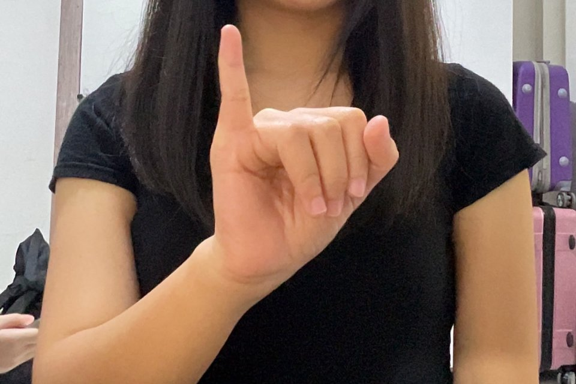
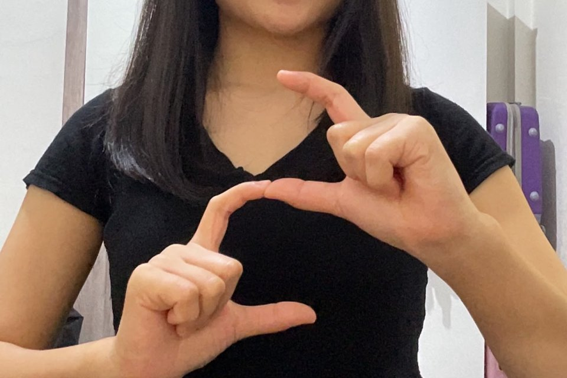
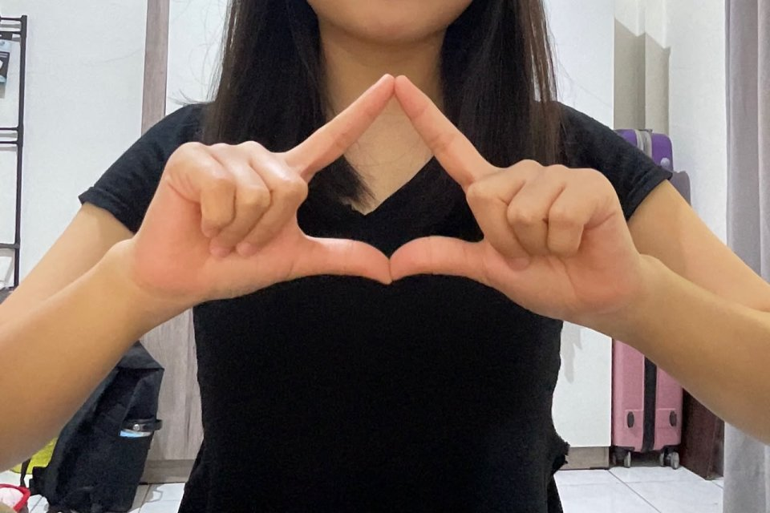

Apa itu BISINDO?
BISINDO (Bahasa Isyarat Indonesia) adalah bahasa isyarat yang tumbuh dan dipakai sehari-hari oleh teman Tuli di Indonesia. Di IsyaratKu kamu mulai dari dasarnya: alfabet A–Z.
- Sebagian huruf memakai dua tangan, misalnya A dan B.
- Setiap huruf punya foto contoh yang bisa kamu tiru.
Perhatikan tiga hal di setiap foto
- 1Bentuk jari: jari mana yang lurus, ditekuk, atau saling menyentuh.
- 2Posisi kedua tangan: berdampingan, bertumpuk, atau satu tangan saja.
- 3Arah telapak: menghadap kamera, ke samping, atau ke bawah.
Foto dilihat dari sisi kamera, sama seperti saat kamu praktik.
Posisi dan cahaya yang baik
- Cahaya dari depan, bukan dari belakang badan.
- Seluruh tangan sampai pergelangan masuk ke layar.
- Latar belakang polos lebih mudah dikenali.
- Tangan menghadap lurus ke kamera, jangan terlalu miring.
Tahan gesture sampai stabil
Tekan Mulai Kamera, peragakan huruf target, lalu tahan sekitar dua detik. Sistem baru menampilkan huruf setelah hasilnya konsisten di beberapa frame.
- Keyakinan menunjukkan seberapa yakin model. Di bawah 60% hasilnya diabaikan.
- Gambar kamera hanya diproses lalu dibuang, tidak disimpan.
Pantau progres setiap huruf
Setiap huruf punya status. Tandai huruf yang sudah kamu pahami, lalu praktikkan sampai berhasil. Dashboard menunjukkan huruf yang perlu dipelajari berikutnya.
Tidak perlu akun. Progres tersimpan di browser ini, jadi akan hilang jika data browser dihapus atau kamu memakai perangkat lain.